배관기능사 (2015-01-25 기출문제)
1과목: 배관시공 및 안전관리
1. 관이나 기기 속의 물의 온도가 공기 노점온도보다 낮을 때 관 등의 표면에 수분이 응축하는 현상을 무엇이라고 하는 가?
- 보냉
- 결로
- 보온
- 단열
(정답률: 92%)

2. 중량물을 인력(人力)에 의해 취급할 때 일반적인 주의사항으로 옳지 않은 것은?
- 들어 올릴때는 가급적 허리를 내리고 등을 펴서 천천히 올린다.
- 안정하지 않은 곳에 내려놓지 말 것이며, 높은 곳에 무리하게 올려놓지 않는다
- 운반하는 통로는 미리 정돈해 놓고, 힘겨운 물건은 기중기나 운반차를 이용한다.
- 공동적업을 할 때는 체력이나 기능 수준이 상대방과 전혀 다른 사람을 선택하여 운반한다.
(정답률: 93%)
3. 배관 안지름이 1000mm이고, 유량이 7.85m3/s일 때 이 파이프 내의 평균 유속은 약 몇 ㎧인가?
- 10
- 50
- 100
- 150
(정답률: 54%)
4. 화학장치용 재료의 구비조건으로 옳지 않은 것은?
- 가공이 용이하고 가격이 저렴할 것저
- 온에서도 재질의 열화가 없을 것
- 고온, 고압에 대하여 기계적 강도가 클것
- 접촉 유체에 대하여 내식성이 크고 크리프 강도가 작을 것
(정답률: 82%)
5. 정지하고 있는 물체의 뒷면에 진공 부분이 발생하게 되어 물체는 그로 말미암아 공기의 흐름 방향대로 힘을 받게 되며 그 힘의 방향으로 가속도를 얻게 되며 서서히 움직이게 되는 원리를 응용한 것은?
- 공기수송기
- 터보형(원심식) 압축기
- 공기압식 전송기
- 분리기 및 후부 냉각기
(정답률: 69%)
6. 다음 중 열교환기의 사용 용도에 해당되지 않는 것은?
- 응축
- 냉각 및 가열
- 폐열 방출
- 증발 및 회수
(정답률: 77%)
7. 게이지 압력이 1.4기압(㎏f/cm2)일때 정수두는 몇 m인가?
- 0.14
- 1.4
- 14
- 140
(정답률: 79%)
8. LPG 저장 설비중 구형 저장탱크에 관한 설명으로 옳지 않는것은?
- 구조가 간단하고 시설비가 싸다.
- 강도가 크고 동일 용량으로는 표면적이 가장 크다.
- 드레인이 쉽고 악천후에도 유지 관리가 용이하다.
- 단열성이 높아서 -50℃ 이하의 산소, 질소, 메탄, 에틸렌 등의 액화가스 저장에 적합하다.
(정답률: 61%)
9. 배관의 세정 방법중 기계적(물리적)세정방법에 해당하는 것은?
- 순환 세정법
- 피그 세정법
- 침적 세정법
- 스프레이 세정법
(정답률: 81%)
10. 가스배관 설비의 보수에서 잔류 가스를 처리하기 위한 방출관의 높이는 지상에서 몇m 이상 높이로 설치하는가?
- 3
- 4
- 5
- 6
(정답률: 74%)
11. 수도 직결 급수 방식에서 수도 본관의 최저 필요 수압을 구하는 식으로 옳은 것은? (단, P0는 수도 본관 최저 수압(㎏f/cm2) P1은 기구 별 최저 소요압력(㎏f/cm2) P2는 관내 마찰 손실 압력(㎏f/cm2), h는 수전고(m)이다)
- P0 ≥ P1+ P2+ h/10
- P0 ≥ P1+ P2- h/10
- P0 ≥ P1- P2+ h/10
- P0 ≥ P1- P2- h/10
(정답률: 74%)
12. 아크 광선에 의해 눈에 전광성 안염이 생겼을 경우 안전 조치사항으로 가장 적합한 것은?
- 비눗물로 눈을 닦아낸다
- 온수로 찜질을 하거나 염산수로 눈을 닦는다.
- 2일 지나면 자여히 회복되므로 그대로 방치하여 둔다
- 냉수에 찜질을 하거나 붕산수로 눈을 닦고 안정을 취한다.
(정답률: 84%)
13. 집진장치 배관에서 홤진가스를 방해판등에 충돌시키거나 흐름을 반전시켜 기류의 급격한 방향 전환을 행하게 함으로써 분진을 제거하는 방식은?
- 세정식 집진법
- 관성력식 집진법
- 여과식 집진법
- 원심력식 집진법
(정답률: 60%)
14. 강관의 굽힘작업 시 안전사항으로 옳지 않은 것은?
- 냉간굽힘 시에는 벤딩머신의 굽힘능력 이상 관을 굽히지 않는다.
- 긴 관을 굽힐 때에는 주변에 장애물이 없는지 반드시 확인한다.
- 열간굽힘 시 관 가열부에 화상을 입지 않도록 각별히 주의한다.
- 냉간굽힘 후 관이 벤딩 포머에서 빠지지 않을 때에는 쇠 해머로 포머에 충격을 가해서 관을 빼낸다.
(정답률: 86%)
15. 배관 지지쇠 종류 중 배관의 벤딩부분과 수평부분을 영구히 고정시켜 배관의 이동을 구속시키는 것은?
- 파이프 슈(pipe shoe)
- 레스트레인트(Restraint)
- 리지드 서포트(Rigid Support)
- 스프링 서포트(Spring Support)
(정답률: 63%)
16. 내부에너지 400KJ. 압력 300kpa, 체적 2m2인 계의 엔타피는 몇 KJ인가?
- 700
- 800
- 900
- 1000
(정답률: 59%)
17. 일반적인 경우 중앙식 급탕기와 비교한 개별식 급탕법의 장점으로 가장 적합한 것은?
- 배관길이가 짧아 열손실이 적다.
- 기계실에 설치되므로 관리가 쉽다.
- 대규모 설비이므로 열효율이 좋다.
- 값싼 중유, 벙카C유 등의 연료를 사용하여 급탕비가 적게 든다
(정답률: 78%)
18. 소화설비 중 탄산가스설비의 특징으로 옳지 않은 것은?
- 무해, 무취하고, 절연성이 높다.
- 소화 후 소화물에 대하여 오염, 손상등이 없다.
- 유지비가 많이 들고, 펌프 등 압송장치가 필요하다.
- 저장기간 동안 변질이 없고 반영구적으로 사용할 수 있다.
(정답률: 75%)
19. 가스배관의 보수 또는 배관을 연장을 할 경우 가스팩 사용에 관한 설명으로 옳지 않은 것은?
- 가스팩을 설치할 때는 2m 이상의 방출관을 설치하여야 한다.
- 가스를 차단할 경우는 유효기간이 지나지 않은 가스팩을 사용하여야 한다.
- 팩을 제거할 때는 상류측을 먼저 빼내고 차단부의 공기를 방출시킨후 하류측을 제거한다.
- 가스팩에는 공기를 1kgf/cm2이상부터 관의 지름이 클수록 10kgf/cm2까지 높은 압력으로 사용한다.
(정답률: 67%)
20. 펌프설치 및 주위 배관에서 흡입배관 시공에 필요로 하지 않은 것은?
- 사이펀 관
- 스트레이너
- 진공 게이지
- 리프트형 체크 밸브
(정답률: 60%)
2과목: 배관공작 및 재료
21. 보일러 급수에 용해되어 있는 공기 중 산소, 이산화탄소 등의 용존기체를 제거하는 장치는?
- 환원기
- 탈기기
- 증발기
- 절탄기
(정답률: 63%)
22. 진공 환수관 증기난방에서 진공펌프가 환수주관 보다 높은 위치에 있거나, 방열기 보다 높은 곳에 환수주관을 배관하는 경우 응축수를 끌어올리기 위하여 설치하는 것은?
- 리프트 피팅
- 고압 트랩장치
- 저압 트랩장치
- 플래시 래그장치
(정답률: 77%)
23. 각 층의 배수 수직관의 공기 혼합 이음쇠와 배수 수평 분기관 및 배수 수직관의 기초 부분의 공기 분리 이음쇠로 구성되어 있으며, 수직관 안에서 배수와 공기를 억제시키고 배수 수평 분기관으로부터 들어오는 배수와 공기를 수직관안에서 혼합하는 역할을 하는 방식을 무엇이라 하는가?
- 1관식 방식
- 2관식 방식
- 소벤트 방식
- 섹스티아 방식
(정답률: 68%)
24. 도시가스의 성분 중 가연성 가스가 아닌 것은?
- H2
- CH2
- CO2
- CO
(정답률: 76%)
25. 증발기에서 증발한 냉매를 기계적인 압축이 아닌 용액으로의 흡수 및 방출에 의해 냉동시키는 것은?
- 압축식 냉동기
- 흡착식 냉동기
- 흡수식 냉동기
- 증기분사식 냉동기
(정답률: 66%)
26. 석면 시멘트관의 이음에서 칼라 속에 2개의 고무링을 넣어 이음하는 방식으로 고무 가스켓 이음이라고도 하는 이음법은?
- 콤보이음
- 고무링 이음
- 플레어 이음
- 심플렉스 이음
(정답률: 75%)
27. 동관공작용 공구 중 직관에서 분기관을 성형할 경우 사용하는 공구는?
- 리이머(Reamer)
- 티뽑기(Extractors)
- 튜브벤더(Tube Bender)
- 사이징 툴(Sizing Tool)
(정답률: 82%)
28. 강관의 가스 절단에 대한 원리를 가장 정확하게 설명한 것은?
- LPG와 강과의 융화반응을 이용하여 절단한다.
- 질소와 강과의 탄화반응을 이용하여 절단한다.
- 산소와 강과의 화학반응을 이용하여 절단한다.
- 아세틸렌과 강과의 액화반응을 이용하여 절단한다.
(정답률: 75%)
29. 벤더로 관의 굽힘작업시 관이 파손되는 경우 그 원인으로 다음 중에서 가장 적합한 것은?
- 굽힘 반지름이 너무 작다.
- 성형틀의 흠이 관의 지름보다 크다.
- 클램프 또는 관에 기름이 묻어 있다.
- 안내틀 조정이 너무 약하게 되어 저항이 작다.
(정답률: 72%)
30. 20A(3/4") 강관에서 2개의 45° 엘보를 사용해서 그림과 같이 연결하려면 빗면 연결부분 직관의 실제소요길이는 약 얼마인가?(단, 20A 엘보의 바깥 면에서 중심까지의 길이는 25mm, 엘보 물림 나사부길이는 15mm로 한다)
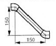
- 152mm
- 172mm
- 192mm
- 212mm
(정답률: 66%)
31. 피복 아크용접봉에서 피복제의 역할에 관한 설명으로 옳지 않은 것은?
- 전기 절연작용을 한다.
- 모재 표면의 산화물을 제거한다.
- 용융금속의 응고와 냉각속도를 촉진시켜 준다.
- 응용금속에 필요한 합금원소를 첨가하여 준다.
(정답률: 73%)
32. 일반 배관재로 사용하는 강관, 동관, 스테인리스관, 합성수지과의 특성에 관한 설명으로 옳지 않은 것은?
- 위생성은 강관이 가장 좋지 않다.
- 내식성은 동관과 스테인리스관이 좋다.
- 인장강도가 가장 우수한 관은 스테인리스관이다.
- 열전도율이 가장 우수한 관은 스테인리스관이다.
(정답률: 67%)
33. 피복금속 아크전기용접과 비교하였을 때 가스용접의 장점으로 옳지 않은 것은?
- 열효율이 높고 열집중성이 좋다.
- 유해광선 발생이 전기 용접보다는 적다.
- 장거리 운반이 편리하고 설비비가 저렴하다.
- 응용 범위가 넓고 가열조절이 비교적 자유롭다.
(정답률: 57%)
34. 다음중 동력 파이프 나사 절삭기가 아닌 것은?
- 호브식
- 로터리식
- 오스터식
- 다이헤드식
(정답률: 68%)
35. 그래브링(grab ring)과 O-링 부분에 실리콘 윤활유를 발라 준 후 파이프를 연결 부속재에 가벼운 힘으로 수평으로 살며시 밀어 넣어 접합하는 관은?
- 폴리에틸랜관
- 폴리부틸렌관
- 플리프로필렌관
- 폴리에스테르관
(정답률: 69%)
36. 주철관 이용에서 소켓이음을 혁신적으로 개량한 것은 스테인리스강 커플링과 고무링만으로 쉽게 이음을 할 수 있는 접합방법은?
- 픽도릭 접합
- 기계적 접합
- 플랜지 접합
- 노-허브 접합
(정답률: 78%)
37. 배관용 스테인리스 강관의 프레스식 관이음쇠의 특징이 아닌 것은?
- 작업시간을 단축할 수 있다.
- 작업의 숙련도가 필요 없다.
- 배관 시공 단가를 줄일 수 있다.
- 화기를 사용하여 접합하므로 화재의 위험성이 크다.
(정답률: 72%)
38. 동관의 납땜 이음에서 경납땜을 할 때 사용되는 것이 아닌 것은?
- 주석납(Sn+Pb)
- 은납(Cu+Zn+Ag)
- 황동납(Cu+Zn)
- 양은납(Cu+Zn+Ni)
(정답률: 67%)
39. 배관용 패킹 재료를 선택할 때 고려하여야 할 사항으로 가장 거리가 먼 것은?
- 패킹 재료의 보온성
- 관속에 흐르는 유체의 화학적인 성질
- 관속에 흐르는 유체의 물리적인 성질
- 진동, 충격 등에 대한 기계적인 조건
(정답률: 69%)
40. 신축으로 인한 배관의 좌우, 상하 이동을 구속하고 제한하는 목적으로 사용되는 레스트레인트(restraint)의 종류가 아닌 것은?
- 행거
- 앵커
- 스토퍼
- 가이드
(정답률: 66%)
3과목: 배관제도
41. 스테인리스강의 부동태피막(보호피막)은 크롬(Cr)과 무엇이 결합하여 형성하는가?
- 질소 또는 수산기
- 산소 또는 수산기
- 질소 또는 염산기
- 산소 또는 염산기
(정답률: 68%)
42. 동관에 대한 설명으로 옳지 않은 것은?
- 동관은 강관보다 내식성이 좋다.
- 두께가 가장 두꺼운 것은 M형이다.
- 열전도도가 크고 골곡성이 풍부하다.
- 담수에 대한 내식성은 크나, 연수에는 부식된다.
(정답률: 79%)
43. 오토매틱 워터밸브(Automatic water valve)에 관한 설명으로 옳지 않은 것은?
- 주밸브와 보조밸브로 구성되어 있다.
- 중추식 안전밸브와 지렛대식 안전밸브가 대표적인 오토매틱 워터밸브이다.
- 유체가 흐르지 않은 상태에서는 주밸브의 자체중량과 스프링의 힘으로 닫혀져 있다.
- 적용 유체의 자체압력을 이용한 것으로 수위조절밸브, 감압밸브, 차압력 조절밸브에 사용된다.
(정답률: 60%)
44. 합성수지관의 공통적인 특성으로 옳지 않은 것은?
- 경량이다.
- 전기 절연성이 우수하다.
- 내압성과 내마모성이 좋다.
- 작업성이 좋아 시공이 쉽다.
(정답률: 68%)
45. 흄(hume) 관이라고도 부르며 배수관 및 송수관 등에 사용되는 관은?
- 도관
- 석면 시멘트관
- 라이닝 주철관
- 원심력 철근 콘크리트관
(정답률: 77%)
46. 밸브의 종류별 설명으로 옳지 않은 것은?
- 슬루스 밸브는 유량 조정용으로 적당하다.
- 정지 밸브는 유체에 대한 저항이 크나 가볍다.
- 체크 밸브는 유체를 일정한 방향으로만 흐르게 한다.
- 적은 유체의 저항이 작고 흐름을 급속히 개폐할 수 있다.
(정답률: 53%)
47. 증기 트랩의 종류 중 열역학적 트랩에 해당되는 것은?
- 버킷 트랩
- 플로트 트랩
- 열동식 트랩
- 디스크형 트랩
(정답률: 53%)
48. 다음 중 수도용 원심력 사형 주철관의 최대 사용 정수두가 45m인 관은?
- 저압관
- 중압관
- 고압관
- 보통압관
(정답률: 59%)
49. 연단에 아마인유를 배합한 것으로 밀착력이 좋고 풍화에 강하며 다른 도류의 밀착용 및 녹 방지용으로 사용하는 것은?
- 산화철 도료
- 알루미늄 도료
- 광명단 도료
- 합성수지 도료
(정답률: 71%)
50. 다음 중 유기질 보온재에 해당하는 것은?
- 석면
- 암면
- 규조토
- 코르크
(정답률: 65%)
51. 제 3각법에 대하여 설명한 것으로 틀린 것은?
- 저면도는 정면도 밑에 도시한다.
- 평면도는 정면도의 상부에 도시한다.
- 좌측면도는 정면도의 좌측에 도시한다.
- 우측면도는 평면도의 우측에 도시한다.
(정답률: 62%)
52. 구멍에 끼워 맞추기 위한 구멍, 볼트, 리벳의 기호 표시에서 현장에서 드릴 가공 및 끼워맞춤을 하고 양쪽면에 카운터 싱크가 있는 기호는?
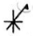
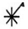
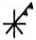
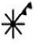
(정답률: 74%)
53. 그림과 같은 배관도시기호가 있는 관에는 어떤 종류의 유체가 흐르는가?
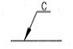
- 온수
- 냉수
- 냉온수
- 증기
(정답률: 81%)
54. 도면을 용도에 따른 분류와 내용에 따른 분류로 구분할 때, 다음중 내용에 따라 분류한 도면인 것은?
- 제작도
- 주문도
- 견적도
- 부품도
(정답률: 65%)
55. 대상물의 일부를 떼어낸 경계를 표시하는데 사용하는 선의 굵기는?
- 굵은 실선
- 가는 실선
- 아주 굵은 실선
- 아주 가는 실선
(정답률: 55%)
56. 다음 중 리벳을 원형강의 KS기호는?
- SV
- SC
- SB
- PW
(정답률: 63%)
57. 다음 입체도의 화살표 방향 투상도로 가장 적합한 것은?
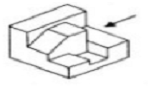
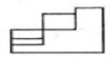
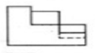
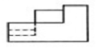
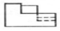
(정답률: 73%)
58. 다음 밸브 기호는 어떤 밸브를 나타내는가?
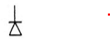
- 풋 밸브
- 볼 밸브
- 체크 밸브
- 버터플라이 밸브
(정답률: 77%)
59. 다음 그림과 같은 용접방법 표시로 맞는 것은?
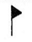
- 삼각 용접
- 현장 용접
- 공장 용접
- 수직 용접
(정답률: 81%)
60. 다음 치수표현 중에서 참고 치수를 의미하는 것은?
- SΦ24
- t=24
- (24)
- □24
(정답률: 81%)